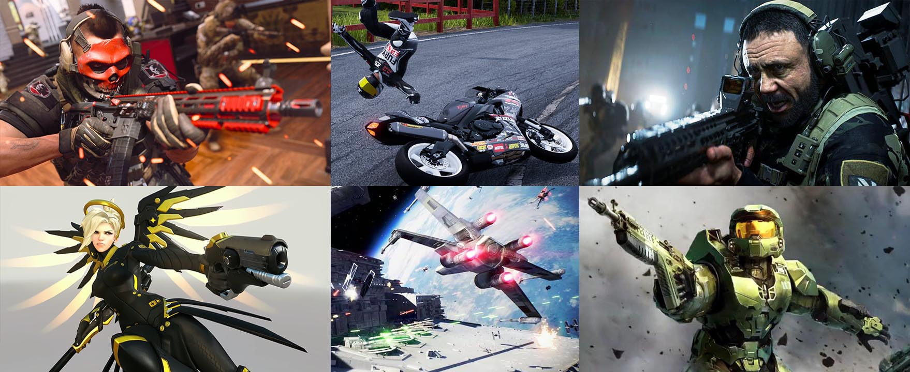
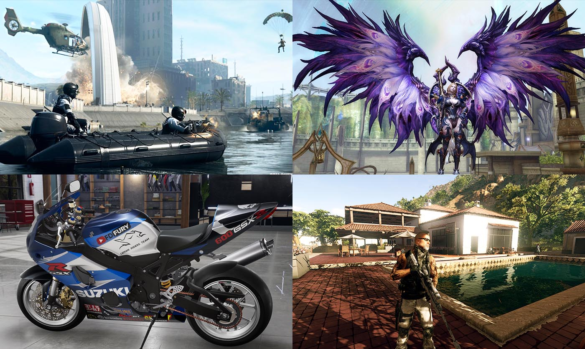
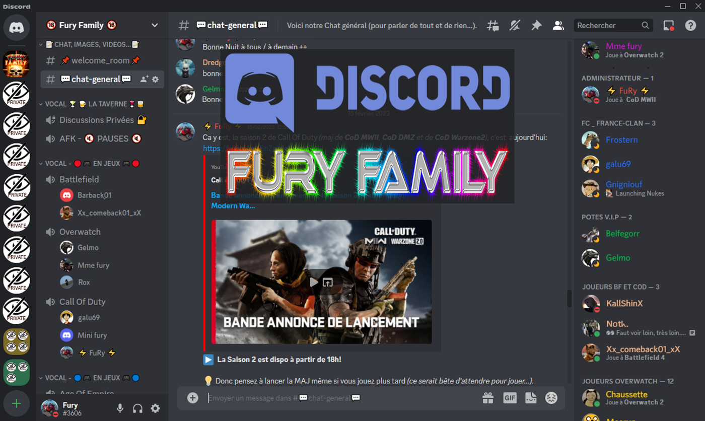

Bienvenue à la [F.F] !


Bienvenue sur le site de la FuRy Family, une petite communauté Multi-Gaming française (à l'ambiance familiale, décontractée et chaleureuse). Découvrez ici qui nous sommes...
Nos différents jeux
Nous privilégions le jeu multi-joueurs et les modes coopératifs plutôt que le jeu en solo. Adeptes principalement de FPS/TPS, nous sommes néanmoins ouverts à tous types de jeux vidéos.

➜ En savoir plus sur les jeux que nous jouons ICI...
Notre serveur vocal
La Fury Family dispose de son propre serveur de VoIP DISCORD. Nous utilisons ses canaux écrits pour nos échanges divers et nous rejoignons sur les chans vocaux pour jouer.

➜ En savoir plus sur notre serveur Discord ICI...
Qui sommes-nous?
La Fury Family est une petite communauté de joueurs créée par FuRy (et les membres de sa famille). Réservée uniquement aux joueurs adultes (à quelques exceptions prêt), la moyenne d'âge de notre communauté se situe entre 30 et 50ans.
Composée à la base d'un couple, ses enfants et d'autres membres de la famille, la communauté s'est au fil des années étendue aux amis de jeux de ses différents membres, grandissant toujours plus.
Nous partageons la passion des jeux vidéos avec certains depuis plus de 10ans à travers différents jeux. Mais ne cherchons pas à recruter en masse, les invitations se font au compte goûte. Mieux vaut un petit groupe de joueurs sympas qu'une grosse communauté pour garder une ambiance familiale et décontractée!
⚠️ Il n'y a pas d'invitation publique à nous rejoindre! Vous ne pouvez rentrer chez nous et nos serveurs que par l'intermédiaire d'un de nos membres. Si vous connaissez, que vous souhaitez discuter avec nous ou vous renseigner, vous pouvez utiliser le formulaire de * de ce site...